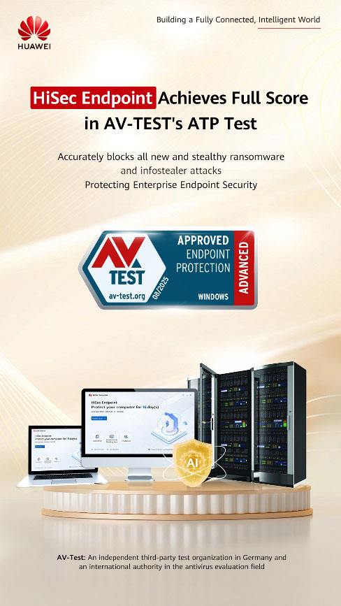

<html>
<title>Huawei Tanıtım</title>
<link rel="stylesheet" type="text/css" href="../haberler.css">
<meta charset="UTF-8">
</html>


<body>


<div class="navigasyon_bar">

	<a href="../haberler.html"> <div class="ic_div">  </div> </a>
	

	<a href="../../huawei_hakkında/huawei_hakkinda.html"> <div class="ic_div"> Huawei Hakkında </div> </a>
	<a href="../../urunler/urunler.html"> <div class="ic_div"> Ürünler </div> </a>

	<a href="../../sürdürülebilirlik/sürdürülebilirlik.html"> <div class="ic_div"> Sürdürülebilirlik </div> </a>

	<a href="../../eğitim/egitim.html"> <div class="ic_div"> Eğitim </div> </a>
	<a href="../../haberler/haberler.html"> <div class="ic_div"> Haberler </div> </a>

</div>

<!------------------------------------------------------------>

<div class="haber_sayfasi">
<h1 class="baslik">
Huawei HiSec Uç Noktası, AV-TEST Gelişmiş Tehdit Koruması (ATP) Değerlendirmesinde Mükemmel Puan Aldı</h1>

<p class="metin">
<br><br><br>

[Pekin, Çin, 5 Kasım 2025] Almanya merkezli önde gelen bağımsız ağ güvenliği değerlendirme kuruluşu AV-TEST, Gelişmiş Tehdit Koruması (ATP) testinin son sonuçlarını açıkladı. Huawei'nin HiSec Endpoint akıllı uç nokta güvenlik sistemi, 10 temel test maddesinin tamamında mükemmel bir puan alarak olağanüstü performansıyla sertifika almaya hak kazandı. Bu sonuç, HiSec Endpoint'in gelişmiş tehdit algılama alanındaki teknolojik liderliğini teyit etmekle kalmıyor, aynı zamanda kurumsal ortamlar gibi kritik senaryolar için güvenilir bir uç nokta güvenlik çözümü sunuyor.

<br><br>




AV-TEST ATP değerlendirmesi, gerçek dünya saldırı senaryolarını simüle etmeye ve özellikle gizli ve son derece kaçınmacı kötü amaçlı yazılımlara odaklanmaya dayanmaktadır. 10 test maddesi, saldırı yaşam döngüsünün tamamını kapsamakta olup, her birinin katı performans ve etkinlik eşikleri bulunmaktadır. Huawei HiSec Endpoint, gizli tehditlerin hassas bir şekilde tespit edilmesini ve önlenmesini sağlayan dört temel teknik gücü sayesinde tam puanla geçmiştir:

<br><br><br>

• Çift motorlu işbirlikçi tespit. HiSec Endpoint, statik virüs tespiti ve dinamik analizi birleştiren hibrit bir mimari benimser. Huawei'nin tescilli yeni nesil İçerik Tabanlı Tespit Motoru (CDE) tarafından desteklenen statik motor, dosya bütünlüğünü derinlemesine doğrular. Dinamik motor, gizli kötü amaçlı modül enjeksiyonunu yakalamak için bellek yükleme durumunu gerçek zamanlı olarak izlemek üzere özel Grafik Akış İşleme Motoru (GSP) kullanır. İki motor arasındaki sinerji, kötü amaçlı programların hassas bir şekilde engellenmesini sağlar.

 <br><br><br>


• Tam bağlantılı bellek izleme. HiSec Endpoint, tam yığın veri kaydı ve çift modlu bellek denetimini birleştiren kapsamlı bir yetenek oluşturur. Bir yandan, çekirdek düzeyindeki problar, anormal bellek yazmalarını belirlemek için işlem oluşturmayı ve kod enjeksiyonunu izler. Diğer yandan, yenilikçi bir uç nokta-bulut işbirlikçi bellek denetim sistemi, uç noktalarda bellek parmak izi oluşturmak için yapay zeka kümelemesi kullanırken, sunucu sürekli yapay zeka eğitimi ve model optimizasyonu için küresel örnekleri bir araya getirir. Bu gelişen bellek tehdidi farkındalığı, dosyasız yürütme durumlarını bile etkili bir şekilde ortaya çıkarır.
 <br><br><br>


• Niyet analizi. Dahili yüksek performanslı GSP motoru, korumalı bellek içinde süreçler, dosyalar, kayıt defteri erişimi ve HTTPS iletişimi gibi standart işlemleri kapsayan bir "gölge grafiği" oluşturur. Ayrıca bellek erişimi, iş parçacığı ele geçirme ve süreç enjeksiyonu gibi gizli durumları da doğru bir şekilde tespit eder.
 <br><br><br>


• Derinlemesine tehdit yönetimi. Tehdit algılandığında, GSP motoru gerçek zamanlı bir tehdit yayılım alt grafiği oluşturur ve grafik boyunca derinlemesine düzeltme işlemleri gerçekleştirir. Kötü amaçlı süreçleri sonlandırma ve şüpheli dosyaları izole etme gibi temel eylemlerin ötesinde, kritik kayıt defteri anahtarlarını geri yükleme, kötü amaçlı zamanlanmış görevleri silme ve kalıcı hizmetleri kaldırma gibi ince taneli işlemleri destekleyerek, sistem istikrarını korurken uzun vadeli kötü amaçlı yazılım varlığının izlerini tamamen ortadan kaldırır.
 <br><br><br>


Huawei'nin AV-TEST ATP değerlendirmesinde aldığı mükemmel puan, HiSec Endpoint'in teknik gücünün doğrudan bir kanıtıdır. Geleceğe baktığımızda, yapay zeka destekli saldırı teknikleri gelişmeye devam ederken, Huawei güvenlik yeteneklerini geliştirmeye devam ederek her uç noktayı dijital dünyada bir güvenlik kalesi haline getirecektir.
 <br><br><br>

</p>

</div>


<footer class="alt-banner">
  <h1 class="footer_baslik">HUAWEI</h1>

<div class="ustbar">

	<a href="../../index.html" > 
	</img>
	</a>

		<a href="https://www.facebook.com/HuaweiEnterprise" > 
	</img>
	</a>
<a href="https://www.linkedin.com/company/huawei-enterprise" > 
	</img>
	</a>
<a href="https://x.com/HUAWEient" > 
	</img>
	</a>
<a href="https://www.instagram.com/huaweient/" > 
	</img>
	</a>
<a href="https://www.youtube.com/user/HuaweiEnterprise" > 
	</img>
	</a>
	

</div>


  <div class="foot_divs">
    <a href="https://app.huawei.com/eplus/front/index.html#/download">
      <div class="foot_div1">
        
        Huawei e+ Uygulaması
      </div>
    </a>

    <a href="https://app.huawei.com/eplus/soho/front/index.html#/download">
      <div class="foot_div1">
        
        Huawei eKit Uygulaması
      </div>
    </a>

    <a href="https://m.support.huawei.com/intl/prod/enterprisemobile/brochure/index_en.html">
      <div class="foot_div1">
        
        Huawei HiKnow Uygulaması
      </div>
    </a>

    <a href="https://app.huawei.com/eplus/smb/front/index.html#/download?countryCode=Global">
      <div class="foot_div1">
        
        Huawei eFly Uygulaması
      </div>
    </a>
  </div>

  <div class="foot">
    <a href="https://www.huawei.com/en/contact-us">Bize Ulaşın</a>
    <a href="https://www.huawei.com/en/legal">Kullanım Şartları</a>
    <a href="https://www.huawei.com/en/privacy-policy">Gizlilik Politikası</a>
    <a href="https://www.huaweicloud.com/intl/en-us/">Huawei Bulut</a>
  </div>

  <p class="last_foot">© 2026 Tüm hakları saklıdır</p>
</footer>


</div>


</body>
